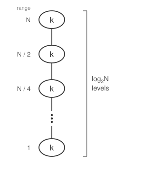
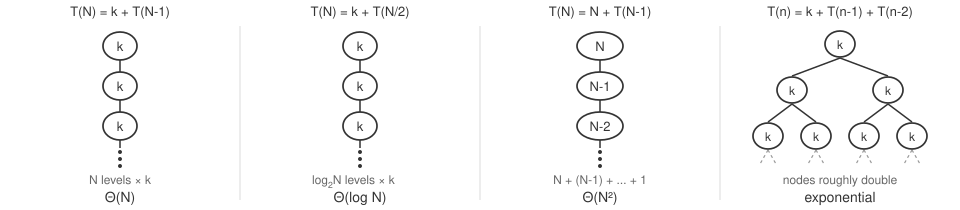

Recursion in C++
Liting Zhang
University of West Florida
Today's Roadmap
We start with normal function calls, then use the same stack-frame idea to understand recursion.
What happens during a normal function call
What a stack frame stores
How recursive calls create more stack frames
Base case, recursive case, and progress
Tracing countdown and factorial
Writing recursive functions for arrays and binary search
Repeated work, stack overflow, and debugging
What You Should Be Able To Do
Explain what happens when a function is called
Explain why each active call has its own stack frame
Identify the base case and recursive case
Explain how each call moves closer to stopping
Trace a short recursive call by hand
Write a recursive function with correct termination
What Is a Stack Frame?
A stack frame is the temporary memory space for one active function call.
| Part of a frame | What it means |
|---|---|
| Parameters | Values passed into this call |
| Local variables | Variables created inside this call |
| Return location | Where the program continues after the call finishes |
Each active function call has its own frame
Frames are stored on the call stack
The newest frame is placed on top
Example Function Call
int doubleValue(int num) {
int result = num * 2;
return result;
}
int main() {
int x = 5;
int answer = doubleValue(x);
cout << answer << endl;
}When this line runs:
int answer = doubleValue(x);mainkeeps its own variablesdoubleValuegets a new framenumreceives a copy ofxmainwaits for the returned value
Stack Frame Snapshot
While doubleValue(x) is running, both frames are active.
Top of stack
+-----------------------------+
| doubleValue(num) |
| parameter: num = 5 |
| local: result = 10 |
| return to main |
+-----------------------------+
| main() |
| local: x = 5 |
| local: answer = waiting |
| return to operating system |
+-----------------------------+
Bottom of stackThe bottom frame is
mainmainstill stores its local valuesThe top frame is the function currently running
When
doubleValuereturns, its frame is removed
After return:
main frame has
x = 5
answer = 10What Is a Recursive Function?
A recursive function is a function that calls itself.
It is still a normal function call
Each call gets its own stack frame
Each call works on a smaller version of the problem
One call must eventually stop without calling again
General shape
function(problem) {
if (problem is small enough) {
answer directly
}
else {
solve a smaller problem
}
}Three Questions Before Writing Recursion
| Question | Code part | Countdown example |
|---|---|---|
| When do I stop? | Base case | count <= 0 |
| How do I make it smaller? | Progress step | count - 1 |
| What happens otherwise? | Recursive case | print, then call again |
Without a base case, the calls do not stop
Without progress, the stack keeps growing
Answer these before writing the recursive call, not after
Make the Problem Smaller
The recursive call must move closer to the base case.
Countdown
count = 3
count = 2
count = 1
count = 0 base caseProgress step:
count - 1
Factorial
n = 4
n = 3
n = 2
n = 1 base caseProgress step:
n - 1
Countdown: Identify the Parts
void countDown(int count) {
if (count <= 0) {
cout << "Go!" << endl;
}
else {
cout << count << endl;
countDown(count - 1);
}
}Base case:
count <= 0Direct answer: print
Go!Recursive case: the
elseblockProgress: call
countDown(count - 1)
Recursive Calls Create More Frames
Trace countDown(3) at the moment countDown(0) starts.
Top of stack
+-------------------------+
| countDown(0), count = 0 |
+-------------------------+
| countDown(1), count = 1 |
+-------------------------+
| countDown(2), count = 2 |
+-------------------------+
| countDown(3), count = 3 |
+-------------------------+
| main() |
+-------------------------+
Bottom of stackThese frames are all for the same function
They are still separate active calls
Each frame has its own
countThe top frame reaches the base case first
Call Phase: Going Down
Before the base case, each call may create one more call.
Calls created
main
countDown(3)
countDown(2)
countDown(1)
countDown(0)Output during the calls
3
2
1
Go!The print happens before the recursive call
The numbers print while the stack is growing
Return Phase: Coming Back
After the base case finishes, the stack unwinds.
Return order
countDown(0) finishes
countDown(1) finishes
countDown(2) finishes
countDown(3) finishes
main continuesThe newest call returns first
Older calls were waiting below it on the stack
For
countDown, there is no extra work after the recursive call
Loop vs Recursive Call
| Loop | Recursion |
|---|---|
| Repeats inside one function call | Repeats by making more function calls |
| Usually reuses the same local variables | Each call has its own frame |
Countdown can be written either way. We trace the recursive version because the stack-frame behavior is easy to see
Which one to prefer comes at the end of this module
Factorial Code and Trace
Factorial is a natural recursive formula.
long long factorial(int n) {
if (n <= 1) {
return 1;
}
return n * factorial(n - 1);
}Base case:
n <= 1Progress:
n - 1
Trace factorial(4):
factorial(4)
= 4 * factorial(3)
= 4 * 3 * factorial(2)
= 4 * 3 * 2 * factorial(1)
= 4 * 3 * 2 * 1
= 24The returned value is used by the older call.
Work Before vs Work After the Call
Where the work happens changes the output order.
void down(int n) {
if (n == 0) return;
cout << n << " ";
down(n - 1);
}
void up(int n) {
if (n == 0) return;
up(n - 1);
cout << n << " ";
}down(3)prints before the recursive call:3 2 1up(3)prints after the recursive call returns:1 2 3
Parameters Track Progress
Each recursive call gets its own parameter values.
Countdown uses
countFactorial uses
nArray recursion often uses an index
Binary search uses
leftandrightbounds
The parameter values tell the function which smaller problem it is solving right now.
Sum an Array Recursively
Add the current value, then sum the rest of the array.
int sumFrom(const int a[], int n, int index) {
if (index == n) {
return 0;
}
return a[index] + sumFrom(a, n, index + 1);
}Trace with {4, 6, 2}:
sumFrom(a, 3, 0)
= 4 + sumFrom(a, 3, 1)
= 4 + 6 + sumFrom(a, 3, 2)
= 4 + 6 + 2 + sumFrom(a, 3, 3)
= 4 + 6 + 2 + 0
= 12Base case:
index == nProgress:
index + 1
Use a Helper for a Clean Interface
The user of the function should not need to pass the starting index.
int sumFrom(const int a[], int n, int index) {
if (index == n) return 0;
return a[index] + sumFrom(a, n, index + 1);
}
int sumAll(const int a[], int n) {
return sumFrom(a, n, 0);
}sumAllis the clean public functionsumFromcarries the extra recursive state
Binary Search Idea
Only works on a sorted array
Check the middle value
If target is smaller, search the left half
If target is larger, search the right half
Progress: the search range gets smaller
Binary Search Code
int binSearch(const int a[], int left, int right, int target) {
if (left > right) {
return -1;
}
int mid = left + (right - left) / 2;
if (a[mid] == target) return mid;
if (target < a[mid]) return binSearch(a, left, mid - 1, target);
return binSearch(a, mid + 1, right, target);
}Trace the Range
Search for 20 in {2, 5, 8, 11, 14, 20, 23}.
left=0, right=6, mid=3, a[mid]=11
20 is larger -> search right half
left=4, right=6, mid=5, a[mid]=20
found at index 5The first call searches 7 elements
The second call searches only 3 elements
That shrinking range is the recursive progress
Map the Three Questions to Code
| Problem | Stop when... | Smaller problem | Use result by... |
|---|---|---|---|
| Countdown | count <= 0 | count - 1 | printing |
| Factorial | n <= 1 | n - 1 | multiplying |
| Array sum | index == n | index + 1 | adding |
| Binary search | empty range | left or right half | returning index |
This is more useful than forcing every problem into one generic template
Fibonacci Matches the Definition
F(0) = 0F(1) = 1F(n) = F(n - 1) + F(n - 2)
int fib(int n) {
if (n <= 0) return 0;
if (n == 1) return 1;
return fib(n - 1) + fib(n - 2);
}Trace fib(5):
fib(5)
= fib(4) + fib(3)
= (fib(3) + fib(2)) + (fib(2) + fib(1))
= (2 + 1) + (1 + 1)
= 5The code follows the math definition
Each call makes two more calls, so the tree branches
fib(2)already appears twice
Naive Fibonacci Repeats Work
fib(5)
├─ fib(4)
│ ├─ fib(3)
│ └─ fib(2)
└─ fib(3)
├─ fib(2)
└─ fib(1)fib(3)is computed more than oncefib(2)is computed more than onceMemoization stores answers so repeated calls can reuse them
Recursion Trees
That picture becomes a cost tool if each node holds the work done in that call only, not counting its recursive calls, written in terms of that call's own input size.
Binary search does \(k\) operations, then one call on half the range:
T(N) = k + T(N / 2)\(k\) is constant work: one middle element is checked whether the range holds 7 or 7 million
One recursive call per node, so the tree is a chain
Halving reaches the base case after about \(\log_2 N\) levels
Total = work per level \(\times\) levels = \(k \cdot \log_2 N\), so \(\Theta(\log N)\)
Every active call holds a frame, so the longest path is also the extra space

Not All Recursion Is Slow
Some recursive functions shrink the problem quickly.
long long powFast(long long x, int n) {
if (n == 0) return 1;
if (n == 1) return x;
long long half = powFast(x, n / 2);
if (n % 2 == 0) return half * half;
return half * half * x;
}This cuts
nroughly in half each callThe recursion depth is much smaller than subtracting 1 each time
Four Tree Shapes
| Recurrence | Tree shape | Cost | Where we saw it |
|---|---|---|---|
| \(k + T(N-1)\) | chain, \(N\) levels | \(\Theta(N)\) | countdown, factorial, sumFrom |
| \(k + T(N/2)\) | chain, \(\log_2 N\) levels | \(\Theta(\log N)\) | binSearch, powFast |
| \(N + T(N-1)\) | chain, work shrinks each level | \(\Theta(N^2)\) | selection sort, Module 4 |
| \(k + T(n-1) + T(n-2)\) | branching | exponential | naive fib |

The node label is re-read at each level: \(k\) stays \(k\), but \(N\) becomes \(N-1\), then \(N-2\), on the way down
Same chain, same \(N\) levels: flat work gives \(k \cdot N\), shrinking work gives \(N + (N-1) + \cdots + 1 = \frac{N(N+1)}{2}\)
A chain makes one recursive call per node; branching makes more, so nodes multiply level by level.
fibsplits unevenly (\(n-1\) and \(n-2\)), so count doubling rather than summing equal levels
Two Ways Recursion Gets Stuck
Missing base case
void repeatForever(int value) {
cout << value << endl;
repeatForever(value + 1);
}No progress
void countDown(int count) {
if (count <= 0) return;
cout << count << endl;
countDown(count);
}Both can create too many active calls
In C++, the program may eventually crash when the stack runs out of space
Debugging Recursion
Print parameter values to check whether calls move toward the base case.
void countDown(int count) {
cout << "count = " << count << endl;
if (count <= 0) {
cout << "Go!" << endl;
}
else {
countDown(count - 1);
}
}If values move toward the base case, progress is working
If values repeat or move the wrong way, check the recursive call
Choose the Clearer Approach
| Problem Type | Usually Clearer Choice |
|---|---|
| Simple counting | Loop |
| Array sum | Loop or recursion |
| Factorial formula | Loop or recursion |
| Binary search | Loop or recursion |
| Trees, nested choices, backtracking | Recursion |
Use recursion when the problem naturally contains smaller versions of itself
Use a loop when simple repetition is easier to read
Recursion Checklist
What is the base case?
What answer is returned or printed at the base case?
How does each call make the problem smaller?
Does the function use the recursive result correctly?
Could this become too deep or repeat too much work?
Exit Questions
What is the base case in
factorial?Why must each recursive call make progress?
Why does
up(3)print after the recursive call returns?Why is naive Fibonacci slow?
When might a loop be clearer than recursion?